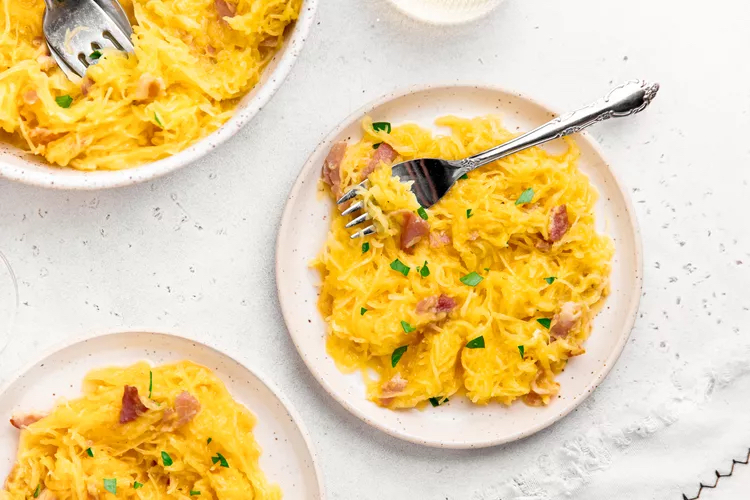

The Best Homemade Lasagna
This classic lasagna recipe is made with an easy meat sauce as the base. Layer the sauce with noodles and cheese, then bake until bubbly! This is great for feeding a big family and freezes well, too.
Spaghetti Squash Carbonara
Spaghetti squash carbonara recipe is a lighter, vegetable-forward version of classic pasta carbonara. Strands of spaghetti squash are topped with a creamy sauce and salty pancetta.
Bucatini all'Amatriciana
Bucatini all'amatriciana is a simple yet classic pasta coated with a spicy tomato sauce flavored with rendered guanciale. It's as delicious as it sounds!